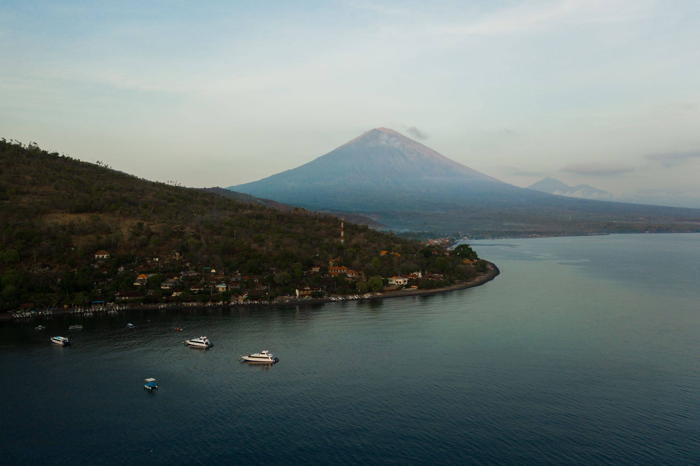
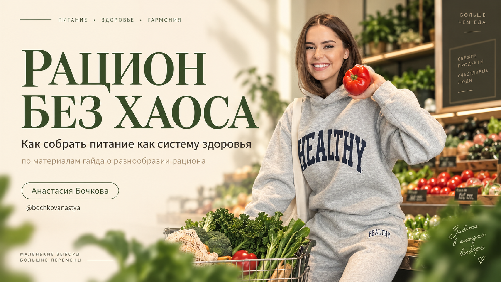
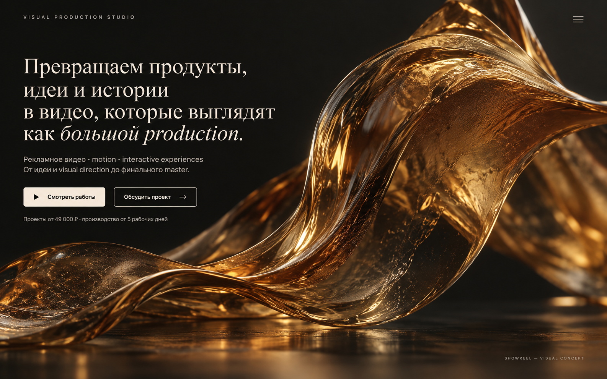

Independent visual production studioFilm · Motion · Interactive
Идеи обретают
масштаб.
Создаём визуальные истории для брендов —
от первого замысла до финального кадра.
01 / Selected work
Работы говорят
раньше нас.
Фильмы, интерактивные истории и визуальные системы для брендов, которым важно, как они выглядят и что оставляют после себя.

02Explore story ↗Сердце не всегда
предупреждает
Emotional film
Visual metaphor · Motion
в балансе90 days · one clear route

VERBA Patient Plan
Healthcare editorial system
Information design
02 / Capabilities
Одна идея.
Любая форма.
Подбираем язык под задачу: от одного сильного фильма до цельной визуальной системы.
Commercial & Image Film
Рекламные и имиджевые фильмы, launch-видео и брендовые истории.
Direction · Production · PostMotion & Visual Systems
Motion identity, титры, графика, data storytelling и экранные системы.
Design · Animation · SoundProduct Story
Ясно показываем продукт, сервис или сложную идею через киноязык.
Concept · Script · VisualisationInteractive Experience
Сайты и цифровые истории, в которых зритель становится участником.
Art direction · Web · Interaction
03 / Point of view
Создаём визуальное
присутствие.
Сильная работа не объясняет, почему она сильная. Она меняет восприятие бренда ещё до первого аргумента.
04 / Process
От замысла
до master.
Один компактный production-процесс. Один визуальный вектор. Никакой потери идеи между этапами.
- 01
Direction
Смысл, аудитория, референсы и визуальная территория.
- 02
Narrative
Драматургия, сценарий, ритм и структура опыта.
- 03
Production
Съёмка, генеративные инструменты, motion и sound.
- 04
Finish
Post-production, master и адаптации под каналы.
05 / Studio
Небольшая команда.
Большой кадр.
Работаем напрямую с основателями и командами брендов. Собираем под проект ровно тот production-состав, который нужен идее.
Film · Motion · Interactive
Moscow / Worldwide
06 / Start a project
Есть идея?
Дадим ей масштаб.
Расскажите, что нужно создать. Вернёмся с форматом, подходом и следующим шагом.